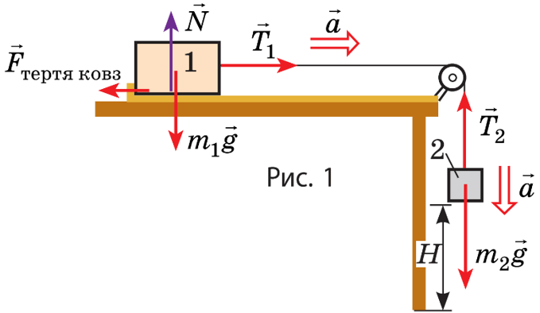
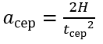

2. Ознайомтеся з установкою для проведення експерименту.
3. Запишіть до таблиці значення мас бруска m1 та тягарця m2
4. Виміряйте висоту, на яку опуститься тягарець після запуску імітації. Для цього використайте "лінійку", яку можна перетягувати. Запишіть отримане значення H до таблиці.

5. Запустіть імітацію кнопкою Пуск, одночасно увімкнувши секундомір. Після того, як брусок перестане рухатися, вимкніть секундомір. Запишіть отримане значення часу руху до таблиці
6. Повторіть дослід ще 2 рази, щоразу записуючи до таблиці значення часу t.
№
Маса бруска m1, кг
Маса тягарця m2, кг
Висота падіння тягарця H, м
Час падіння t, с
Час падіння tсер, с
Прискорення тягарця aсер, м/с2
Коефіцієнт тертя ковзання μсер
Відносна похибка εμ, %
1
2
3
Опрацювання результатів експерименту
1. Визначте середнє значення часу tсер
2. Визначте середнє значення прискорення тіла aсер використавши формулу:

3. Визначте середнє значення коефіцієнта тертя ковзання µсер використавши формулу:
Проаналізуйте експеримент і його результати. Сформулюйте висновок, у якому зазначте:
1) величину, яку ви вимірювали;
2) результат вимірювання;
2) причини похибки.
Творче завдання
Запишіть план проведення експерименту щодо визначення прискорення вільного падіння з використанням установки, зображеної на рис. За можливості проведіть експеримент.